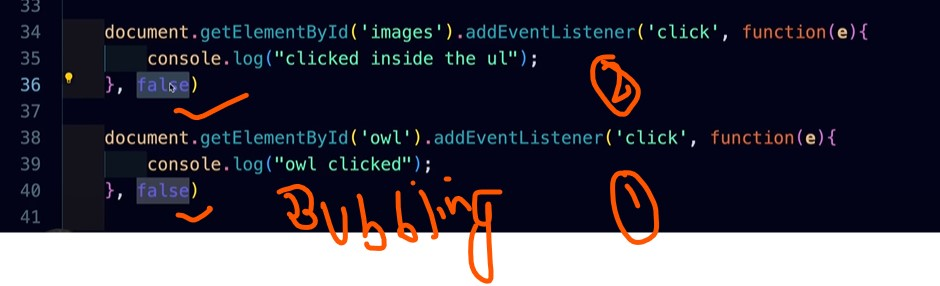

//Notes
// in javascript all the scripts are usually run sequentially
// but in many case we follow async steps like async, await, like that browser events are also not sequene in nature eg: mouse hover, click, drag and drop they envoke after an activity is envoked.
//uing addEventListener approach is good bcoz it helps in Propagation
htnml Events
Amazing image
